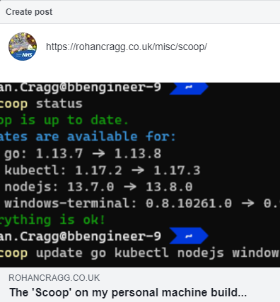
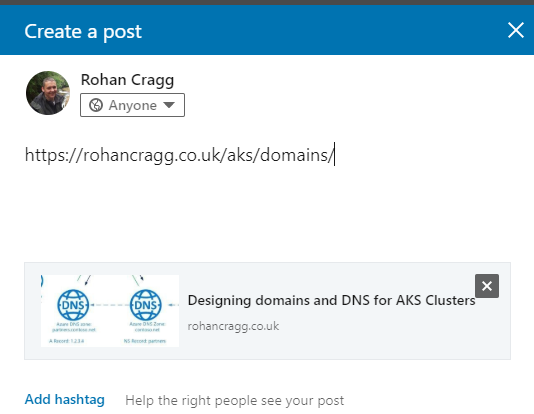

Prettier link sharing with MkDocs
In order to have my posts look as nice as possible when they are shared on Social Media sites such as LinkedIn and Facebook I needed to work out how to control whether an featured image is shown and what text will be displayed by default.
Social Media Link Sharing¶
To show the link sharing working in a couple of Social Media platforms here's how I wanted it to look in Facebook:

And here it is in LinkedIn:

When you enter a URL the platform picks a layout but it selects the title, a description, and an image by trying to parse information from the HTML page content. Facebook and others will primarily look for this information in Open Graph <meta> tags. Without these tags, the Facebook crawler will do its best to identify content some other way, but for me this was not working very well until I worked out how to add these tags to each content page, and how to have this content be relevant to each page.
What is a META tag?
W3Schools describes a META tag as follows:
Metadata is data (information) about data.
The tag provides metadata about the HTML document. Metadata will not be displayed on the page, but will be machine parsable.
Meta elements are typically used to specify page description, keywords, author of the document, last modified, and other metadata.
The metadata can be used by browsers (how to display content or reload page), search engines (keywords), or other web services.
I found this page on the Facebook for developers site about how to use Open Graph META tags
The Open Graph protocol
The Open Graph protocol enables any web page to become a rich object in a social graph. The Open Graph protocol was originally created at Facebook and is inspired by Dublin Core, link-rel canonical, Microformats, and RDFa
Because <meta> tags always go inside the <head> element of an <html> page I needed to work out how to manipulate the content of the <head> in each of the pages on this site.
Customising generated HTML with MkDocs¶
My site is generated by MkDocs. MkDocs is a static site generator which is a piece of software that I'm using to convert the MarkDown format use to write each of these pages into HTML. It does this for me automatically so that I don't need to write the content in HTML myself - but what if I want to change some aspects of the HTML code?
Much of the control over how the Markdown format is converted into HTML using MkDocs is controlled by a Theme. In this section on how to customise the theme you're using (I'm using the excellent Material Theme by @squidfunk) I worked out that I needed to override one of the template block. In my case, in order to add additional <meta> tags I needed to override the extrahead block.
{% extends "base.html" %}
{% block extrahead %}
<meta property="og:title" content="{{ page.meta.og_title }}" />
...
<meta property="og:image" content="{{ page.meta.og_image }}" />
...
{% endblock %}
You can also see from the sample above that I'm referencing the page.meta object which is where I can get data specific to each page and use it to build the content of each meta tag. You can see the full code for the template override file main.html here.
Defining document meta-data¶
The way this works is to use the python-markdown Meta-Data extension which adds a syntax for defining meta-data about a Markdown document. The Material theme that I've used makes use of this metadata but I've take this a couple of steps futher by adding a few more of my own custom key-value pairs (such as og_title and og_image). The metadata is then added to the top of each .md document. The metadata is defined at the beginning of a markdown document and is in YAML format:
---
title: Scoop & Co
description: Using Scoop (and other Package Managers) to configure my system
hero: The 'Scoop' on my personal machine build...
date: 2020-02-04
authors:
- Rohan Cragg
og_title: The 'Scoop' on my personal machine build...
page_path: misc/
og_image: media/scoop-update.png
---
<meta> tag that looks like this
<meta property="og:image" content="http://rohancragg.co.uk/misc/media/scoop-update.png" />
Testing it out!¶
To assist with testing the tags in your Markup, Facebook provide a Sharing Debugger. Here you can see that it provides a preview of what link sharing will look like for any URL you provide it to test: